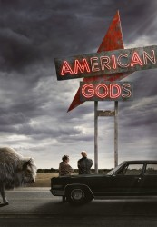

")
 
 IMDB-Wertung: 8.1 / 10
IMDB-Wertung: 8.1 / 10  Metascore:
Metascore: 
Ein Sturm zieht auf, als Shadow Moon aus dem Gefängnis kommt und auf den geheimnisvollen Mr. Wednesday trifft. Freigelassen wegen des Todes seiner Frau, nimmt Shadow eine Stelle als Wednesdays Bodyguard an. Dort findet er sich in einer verborgenen Welt wieder, in der Magie ganz real ist und in der die alten Götter nichts mehr als ihre Unbedeutsamkeit und die aufsteigenden neuen Götter fürchten.
Jahr: 2017
Dauer: 62 Minuten
FSK: 16
Land: USA Studio: Starz!Tonspuren:
Untertitel: Deutsch, Englisch,
Auflösung: 720p (1280x720) Größe: 35328 MB
Genre: Fantasy, Mystery, TV-Serie
Regisseur: David Slade, Adam Kane, Vincenzo Natali, Floria Sigismondi, Craig Zobel
Drehbuch: Bryan Fuller
Soundtrack:
Darsteller:
 Emily Browning als Laura Moon
Emily Browning als Laura Moon Crispin Glover als Mr. World
Crispin Glover als Mr. World Pablo Schreiber als Mad Sweeney
Pablo Schreiber als Mad Sweeney Ian McShane als Mr. Wednesday
Ian McShane als Mr. Wednesday Gillian Anderson als Media
Gillian Anderson als Media Demore Barnes als Mr. Ibis
Demore Barnes als Mr. Ibis Chris Obi als Anubis
Chris Obi als Anubis Omid Abtahi als Salim
Omid Abtahi als Salim Cloris Leachman als Zorya Vechernyaya
Cloris Leachman als Zorya Vechernyaya Orlando Jones als Mr. Nancy
Orlando Jones als Mr. Nancy Betty Gilpin als Audrey
Betty Gilpin als Audrey Peter Stormare als Czernobog
Peter Stormare als Czernobog Mousa Kraish als The Jinn
Mousa Kraish als The Jinn Beth Grant als Jack
Beth Grant als Jack Corbin Bernsen als Vulcan
Corbin Bernsen als Vulcan Tracie Thoms als Buffer
Tracie Thoms als Buffer Jeremy Davies als Jesus Prime
Jeremy Davies als Jesus Prime Ron Lea als Cambro
Ron Lea als Cambro Kristin Chenoweth als Easter
Kristin Chenoweth als Easter Dane Cook als Robbie
Dane Cook als Robbie Siobhan Fallon Hogan als Airport Lady
Siobhan Fallon Hogan als Airport Lady Jake Manley als Bartholomew
Jake Manley als Bartholomew Joel Murray als Paunch
Joel Murray als Paunch Michael Greyeyes als Pit Boss
Michael Greyeyes als Pit Boss Thomas Mitchell als Captain Clank
Thomas Mitchell als Captain Clank John Tench als Viking Leader
John Tench als Viking LeaderDatei: X:\Comic-Serien\American Gods\American Gods S01E01 Der Knochengarten.mkv seit 05.07.2017
Festplatte: Comicverfilmungen+MusikCD
 Es gibt insgesamt 34 Filme in der Gruppe 'Comic-Serien'
Es gibt insgesamt 34 Filme in der Gruppe 'Comic-Serien'